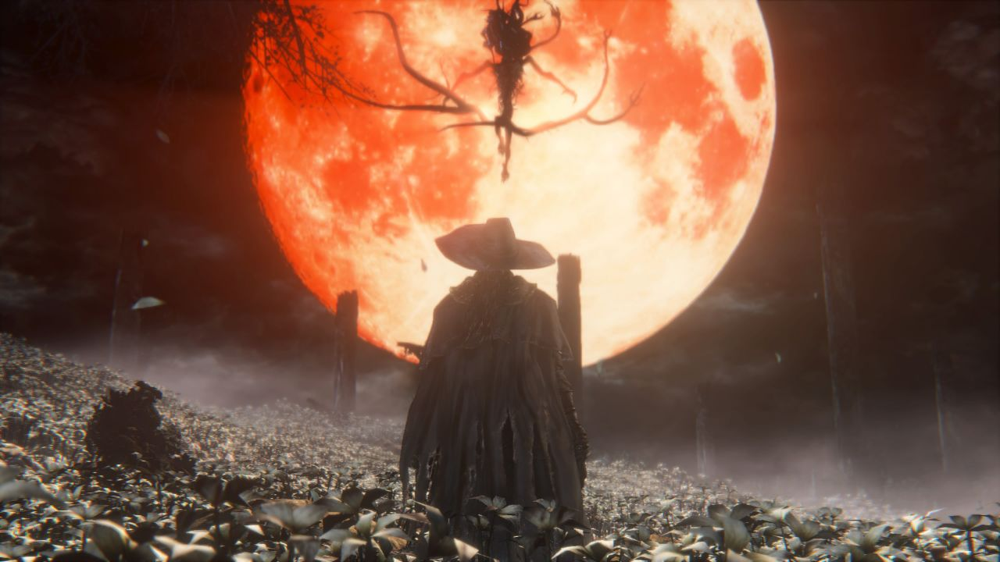
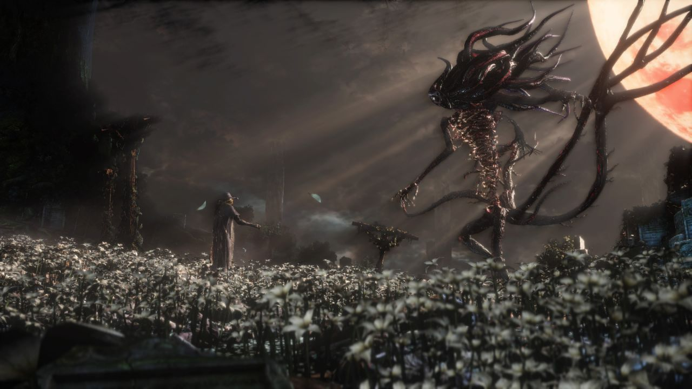

Bloodborne: Easily one of the best games of the generation

I recently finished my first walkthrough of Bloodborne. I know that I am late to the party. I recently got back into playing games after convincing myself that I didn’t enjoy it as much as before; as I grew out of it. The only kind of games I enjoyed playing then were strategy games. The reason being most of the games in the market and very linear story-driven. Whereas a game like Dota had infinite possibilities.
But thankfully, FromSoft revived my love for gaming. I started to give some of the time for Dark Souls 3 given all the hype and how it was difficult and so on. I was thrown a challenge in the very first minutes of the game. It took me several tries to even kill the “allegedly” tutorial boss. I was hooked and the rest is history.
FromSoft defined the benchmark for games. I am very confident to say there are only a handful of studios live to utilize the medium to the fullest. Finishing Dark Souls, I wanted more of it. So I jumped to the obvious selection, Sekiro. Another amazing game. I cannot write about Sekiro or Dark Souls with the same emotion as Bloodborne because this is a game I finished just hours ago and I haven’t stopped thinking about it. Although, most of the games share a similar FromSoft formula. You know you can expect good lore, characters, and mysteries.
Most of what I have to say about Bloodborne is emotions and it is very hard for me to put that into words.
Bloodborne is one of the best games I have ever played and my favorite FromSoft game. I understand why it has such an awesome fanbase. Let’s talk about lore. The team created something surreal, I mean this amount of complexity not even be seen in real life unless you start you observe it. Its just epic. How everything is connected. Of course, not everything is engraved in stone and almost everything is open for interpretation. Note when I point out all FromSoft games, I mean the games after Demons’ Souls; the game which put FromSoft as a unique and inspiring game studio. Thanks to Miyazaki, his vision and the team for defining a genre and generation.
Bloodborne started very vaguely just like most of all FromSoft games. I just started playing with the trust that something greater was definitely in store. That’s the From factor. From always delivers.
Bloodborne is one of a kind and I don’t know where to start honestly. Everything about this game is creepy. I felt like a hunter. The world was so immersive and scary that I was cautious almost all the time. I knew there was a bird with a dog’s head or a dog with a bird’s head around the corner. Some parts were so creepy that I had to run to the next lamp. The serpent forest always gets me. I am even going out on a stretch to say that there must be at least one aspect of these games which gives you the chills.
I felt a sense of duty and there was a big responsibility for me. Also, most of the conversations with my friends end with “I must save Yharnam now”. That’s how invested I was in this game. I love Micolash. His dialogues are super cool and creepy. I used to narrate the cutscene dialogues just to weird out my parents. I was living and breathing this game for a while. It’s true when people say games are an escape. You get to be someone you cannot. Only games can do that in its fullest sense. After watching Vaati’s videos, I was even more intrigued about all the stuff I missed and made no sense at all. Everything was slowly coming together. I mean the people at FromSoft have to smoke some weird stuff to come up with this. It is that good. Bloodborne’s details and lore is insane and beyond decipherable for a casual player like me. You have to go through wikis, speculations, and Vaati’s video to get a sense of what is happening and why it is happening.
The gameplay mechanics and wold design are spectacular and well-thought just like the other games. Everything felt like it had a purpose. The characters and RPG aspects were compelling. The cutscenes although very little were spot on and added to the creepiness of the gameplay. Really good game design and writing.
Games like these teach you to keep trying in life, no matter what and the end it would be worth it. I also read a lot of articles on Sekiro and why it should have an easy mode / make it more accessible. This would go against the creator’s vision and if It is easy, It would not be worth it. Its meant to be played the way it was made to be played. When I am talking about the way to be played, I am not talking about the gameplay or the routes they take but the vision on how the game should feel like. Only if these people who write these articles tried. Life is not easy. Nothing comes easy. You have to fight and earn it. When the First Hunter started playing, I was getting goosebumps. It really felt like I was a hunter. Even if you haven’t played, you can get a good sense of the whole picture just from this soundtrack; the raw emotion behind it.
The bosses are amazing. The soundtracks are spot on. I took my time with this game realizing this was the only reaming FromSoftware game I wanted to play apart from Elden Ring, Demon’s Souls Remake whose release date is still not officially announced (and also Dark Souls Remasters maybe one day). Hoping it be showcased in Gamescon considering that Bandai Namco is going to be there, Elden Rings publisher. Playing Bloodborne pushed me to start reading Lovecraft. It’s amazing how can people even come up with stuff like this. This is way beyond something I can ever imagine.
In short words, Bloodborne is a masterpiece.
 